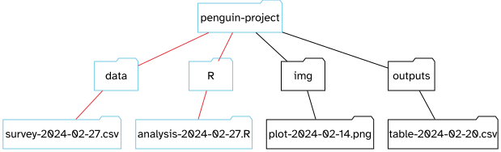

2 Getting started
2.1 What is R?
R is a programming language that follows the philosophy laid down by it’s predecessor S. The philosophy being that users begin in an interactive environment where they don’t consciously think of themselves as programming. It was created in 1993, and documented in (Ihaka and Gentleman 1996).
Reasons R has become popular include that it is both open source and cross platform, and that it has broad functionality, from the analysis of data and creating graphical visualisations and web apps.
Like all languages though it has limitations, for example the syntax is initially confusing.
Jumping Rivers maintains a list of useR groups and meetings, such as the R-Ladies group.
2.2 What is RStudio?
R is the language and RStudio is software created to facilitate our use of R. They are installed separately. You don’t need RStudio to use R, but you do need R to used RStudio.
RStudio is an interactive development environment (IDE). It can be used to write code, navigate the files found on our computer, inspect the variables we are going to create, and visualize the plots. RStudio can also be used for other languages and other tasks (e.g., version control, developing packages, writing Shiny apps) that are beyond the scope here.
Figure 2.1 shows the default view of the RStudio. It is divided into “Panes”.
When you first open RStudio, there are three panes,the console where you type commands, your environment/history (top-right), and your files/plots/packages/help/viewer (bottom-right).
The environment shows all the R objects you have created or are using, such as data you have imported.
The output pane can be used to view any plots you have created.
Not opened at first start up is the fourth default pane: the script editor pane, but this will open as soon as we create/edit a R script (or many other document types). The script editor is where will be typing much of the time.
The placement of these panes and their content can be customized (see menu, R Studio -> Tools -> Global Options -> Pane Layout). One of the advantages of using R Studio is that all the information you need to write code is available in a single window. Additionally, with many short-cuts, auto-completion, and highlighting for the major file types you use while developing in R, R Studio will make typing easier and less error-prone.
Time for another philosophical diversion…
2.2.1 What is real?
At the start, we might consider our environment “real”, that is to say the objects we’ve created/loaded and are using are “real”.
But it’s much better in the long run to consider our scripts as “real”.
Or to put it another way: we can easily recreate an environment from our scripts, but not so easily create a script from an environment.
To support the notion of thinking in terms of our scripts as real, it is recommended to turn off the preservation of workspaces between sessions by setting the Tools > Global Options menu in R studio as shown in Figure 2.2
Save workspace to .RData on exit to Never
2.2.2 Where am I?
The part of your computer operating system that manages files and directories (aka folders) is called the file system. This dates back to 1969 and the Unix filesystem.
The idea is that we have a rooted tree, as with phylogenetic rooted trees in biology. From the root all other directories and files exist along paths going back to the root as shown in Figure 2.3.
On Unix based systems such as Apple or Android, the root is denoted with a forward slash /. On Windows the root is a back slash \. The / or \ is used to to separate directories along the path, denoting a change in the level of the tree
Note: in RStudio the path separator and root is always / regardless of the operating system.
2.2.2.1 Absolute path from the root /
Figure 2.3 shows the absolute path from the root to folder H as a red line.
This is just a made-up example, but in text in this would be /B/E/H.
On a Windows machine the root path may start with the hard drive name e.g. C:/ and on an Apple or Linux machine it will just begin /.
/ through sub-folders B and E to folder H is shown by the red line.
2.2.3 Relative path from where you are
We can also consider relative paths, paths that are relative to each file or folder rather than the root.
Imagine I have project called penguin-project and I have a script in the R folder that analyses data in a spreadsheet in the data folder.
Figure 2.4 shows the relative path between analysis-2024-02-27.R and the spreadsheet survey-2024-02-27.csv.
In natural language from the R script to access the spreadsheet we would need to “go up from the R directory to the project directory and then back down into the data directory”.
In machine readable language from our R script the relative path would be written as ../data/survey-2024-02-27.csv where ../ means go up one level from where the script is.

analysis-2024-02-27.R in the R folder and the and the spreadsheet survey-2024-02-27.csv used by the R script in the data folder is shown in red.
2.3 Installing and loading packages
Packages are collections of functions, and a function is a piece of code written to perform a specific task, such as installing a package.
Therefore, the function install.packages() is a piece of code written to perform the task of installing packages.
We use the function by typing install.packages("tidyverse") with the name of the package in quotes inside the round brackets.
Here the package is tidyverse. Using the console panel to type this and pressing Enter will run the function.
We of course need to know the name of the packages we are interested in.
Once a package is installed we need to load it into our environment to use it. Loading packages is performed using the library() function. As with installation, we put the name of the package - the argument for our function - that we want to load in between the round brackets like so library(tidyverse).
As before this can be done on the console, but we will usually load packages as part of script. Note that we don’t need the quotes for the library function.
2.4 What is a function and how do I use them?
A function is a piece of code written to perform a specific task. Functions in R have the syntax of the name of the function followed by round brackets. The round brackets are where we type the arguments that the function requires to carry out its task. For example, in Section 2.3 the function install.packages() requires the name of the package we want to install as arguments.
Many, if not most, functions can take more than one argument. The creators of the function should have given these defaults for the situation where the user provides only one or some arguments. RStudio should prompt you for the arguments as you type, but if you need to see what they are, use the help function ? with the function name in the Console and it will open the help panel or type the function name into the help panel search box.
For example, to find out all the arguments for install.packages() we’d type ?install.packages and press Enter.
2.4.1 Introducing the Palmer Penguins
The Palmer Penguins package is a dataset curated by Allison Horst of data on three penguin species from the Palmer Station in Antarctica (Figure 2.5).

It’s a great dataset for getting started with and you can install it like so:
install.packages("palmerpenguins")The three penguins species are the Chinstrap, Gentoo and Adélie penguins (Figure 2.6).

The dataset records various information about 344 penguins, including their culmen (Figure 2.7).

2.5 A project orientated workflow
This section is all about how to use R and RStudio to “maximize effectiveness and reduce frustration.”
The above quote is from Jenny Bryan’s article about a project orientated workflow.
The main point here is that how you do things, the workflow, should not be mixed up with the product of the workflow itself.
The product being:
- the raw data.
- the code needed to produce the results from the raw data.
Ways in which you can mix workflow and product include having lines in your script that set your working directory, or using RStudio to save your environment when you are working.
But why is this a problem?
It’s because your computer isn’t my computer or my laptop isn’t my desktop or I’m now using a Windows machine and I wrote the code two years ago on a Mac.
By hard coding the directory into a script I have ensured my code will only run on the machine in which it was written. Chances are you will want to share your code with someone, either for publication or for them to check your work, or because you are working collaboratively and therefore we need to avoid mixing workflow with product.
Likewise we can’t share environments directly, but we can share the code that creates the environment.
If we organise our analysis into self-contained projects that hold everything needed to perform the analysis. These projects can be shared across machines and the analysis recreated, and thus the workflow is kept separate from the product.
What does this look like in practice?
2.5.1 RStudio Projects
Step one is to use an interactive development environment such as RStudio rather than using R on its own for your analysis.
RStudio contains a facility to keep all files associated with a particular analysis together called, as you might expect from Section 2.5, a Project.
Creating a Project creates a file .Rproj containing all the information associated with your analysis including the Project location (allowing you to quickly navigate to it), and optionally preserves custom settings and open files to make it easier to resume work after a break. This is also super helpful if you are working on multiple projects as you can switch between them at a click.
These the steps for creating an Project in a new folder:
- Start R Studio (presentation of R Studio -below- should happen here)
- Under the
Filemenu, click onNew project, chooseNew directory, thenEmpty project - Enter a name for this new folder (aka directory), and choose a convenient location for it. This will be your working directory for the project.
- Click on
Create project
2.5.2 Naming things
Jenny Bryan also has three principles for naming things that are well worth remembering.
When you names something, a file or an object, ideally it should be:
- Machine readable (no white space, punctuation, upper and lower-case)
- Human readable (makes sense in 6 months or 2 years time)
- Plays well with default ordering (numerical or date order)
We’ll see examples of this as we go along.
2.6 Base R, the tidyverse and tidy data
Base R is everything that comes included when you install the R language, whereas the tidyverse has have to be installed in addition to base R. The tidyverse eight core packages that are loaded when the tidyverse library is loaded, but installs a number of other tidyverse packages that can be load separately using the library function.
The key difference between base R and the tidyverse is that the tidyverse uses functions named as verbs with a single purpose, whereas base R syntax can be used for multiple purposes.
This trade-off I’d characterise as cognitive ease versus flexibility.
The tidyverse website has extensive materials for learning more about the tidyverse. And Hands on Programming with R provides a base R view.
2.7 Tidy data
Tidy data follows three principals for tabular data as proposed in the Tidy Data paper (Wickham 2014):
Each variable is a column; each column is a variable.
Each observation is a row; each row is an observation.
Each value is a cell; each cell is a single value.
This is illustrated in Figure 2.9 using a part of the Palmer Penguins dataset (Section 2.4.1). The eight variables in the columns form an observation for each penguin in every row, and each cell has a single value recorded.
Hadley Wickham explains in R4DS tidy data:
Why ensure that your data is tidy? There are two main advantages:
There's a general advantage to picking one consistent way of storing data. If you have a consistent data structure, it's easier to learn the tools that work with it because they have an underlying uniformity.
There's a specific advantage to placing variables in columns because it allows R's vectorized nature to shine.
This will hopefully become apparent in Chapter 3 and Chapter 4.
2.8 Atoms of R
Having set ourselves up in RStudio, let’s turn our attention to the language of R itself.
The basic building blocks of how R stores data are called atomic vector types. It’s from these atoms that more complex structures are built. Atomic vectors have one dimension, just like a single row or a single column in a spreadsheet.
These are the building blocks of more complex data containers such as data frame (Section 2.10.3) containing the penguin dataset (Section 2.4.1).
The four main atoms of R are:
- Doubles: regular numbers, +ve or -ve and with or without decimal places. AKA numerics.
- Integers: whole numbers, specified with an upper-case L, e.g.
int <- 2L - Characters: Strings of text
- Logicals: these store
TRUE‘s andFALSE’s’ which are useful for comparisons.
Let’s make a character vector and check the atomic vector type, using the typeof(). This also introduces a very important R function c(). This lower case c stands for combine. So when we have several objects e.g. words or numbers, we can combine them into a vector the length of the number of objects, as illustrated here for a pack of cards:
cards <- c("ace", "king", "queen", "jack", "ten")
cards[1] "ace" "king" "queen" "jack" "ten" typeof(cards)[1] "character"Note here that we see the use of the assignment operator <- to assign our vector on the right as the object cards. We talk more about that in Section 2.9.
Also note that the output of typeof() is itself a vector of length one and type character.
2.9 Assigning objects
Objects are how we store data inside the R environment. We assign labels to objects using the assignment operator <-
mass_kg <- 55Read this as “mass_kg is assigned to value 55” in your head. A subtle but important point here is that the object is 55 and the value remains 55 regardless of the label we assign to it.
In fact we could assign more than one label to the same object. Another way to think about this is that Bibi is a cat (Figure 2.11), and remains a cat even if I call her Pickle when she’s being naughty.

Using <- can be annoying to type, so use RStudio’s keyboard short cut: Alt + - (the minus sign) to make life easier.
Many people ask why we use this assignment operator when we can use = instead?
Colin Fay had a Twitter thread on this subject, but the reason I favour most is that it provides clarity. The arrow points in the direction of the assignment (it is actually possible to assign in the other direction too) and it distinguishes between creating an object in the workspace and assigning a value inside a function.
Object name style is a matter of choice, but must start with a letter and can only contain letters, numbers, _ and .. We recommend using descriptive names and using _ between words. Some special symbols cannot be used in variable names, so watch out for those.
So here we’ve used the name to indicate its value represents a mass in kilograms. Look in your environment pane and you’ll see the mass_kg object containing the (data) value 55.
We can inspect an object by typing it’s name:
mass_kg[1] 55What’s wrong here?
mass_KGError: object 'mass_KG' not found
This error illustrates that typos matter, everything must be precise and mass_KG is not the same as mass_kg. mass_KG doesn’t exist, hence the error.
Let’s use seq() to create a sequence of numbers, and at the same time practice tab completion.
Start typing se in the console and you should see a list of functions appear, add q to shorten the list, then use the up and down arrow to highlight the function of interest seq() and hit Tab to select. This is tab completion.
RStudio puts the cursor between the parentheses to prompt us to enter some arguments. Here we’ll use 1 as the start and 10 as the end:
seq(1,10) [1] 1 2 3 4 5 6 7 8 9 10If we left off a parentheses to close the function, then when we hit enter we’ll see a + indicating RStudio is expecting further code. We either add the missing part or press Escape to cancel the code.
Let’s call a function and make an assignment at the same time. Here we’ll use the base R function seq() which takes three arguments: from, to and by.
Read the following code as “assign my_sequence to an object that stores a sequence of numbers from 2 to 20 by intervals of 2.
my_sequence <- seq(2,20,2)This time nothing was returned to the console, but we now have an object called my_sequence in our environment.
2.9.1 Indexing and sub-setting
If we want to access and subset elements of my_sequence we use square brackets [] and the index number. Indexing in R starts at 1 such that 1 is the index of the first element in the sequence, element 1 having the the value of 2.
For example element five would be subset by:
my_sequence[5][1] 10Here the number five is the index of the vector, not the value of the fifth element. The value of the fifth element is 10.
And returning multiple elements uses a colon :, like so
my_sequence[5:8][1] 10 12 14 162.10 Lists, matrices, arrays and data frames
Lists also group data into one dimensional sets of data. The difference being that list group objects instead of individual values, such as several atomic vectors.
For example, let’s make a list containing a vector of numbers and a character vector
list_1 <- list(1:110,"R")
list_1[[1]]
[1] 1 2 3 4 5 6 7 8 9 10 11 12 13 14 15 16 17 18
[19] 19 20 21 22 23 24 25 26 27 28 29 30 31 32 33 34 35 36
[37] 37 38 39 40 41 42 43 44 45 46 47 48 49 50 51 52 53 54
[55] 55 56 57 58 59 60 61 62 63 64 65 66 67 68 69 70 71 72
[73] 73 74 75 76 77 78 79 80 81 82 83 84 85 86 87 88 89 90
[91] 91 92 93 94 95 96 97 98 99 100 101 102 103 104 105 106 107 108
[109] 109 110
[[2]]
[1] "R"Note the double brackets to indicate the list elements, i.e. element one is the vector of numbers and element two is a vector of a single character.
We won’t be working with lists, but they are a flexible way to store data of different types in R.
Accessing list elements uses double square brackets syntax, for example list_1[[1]] would return the first vector in our list.
And to access the first element in the first vector would combine double and single square brackets like so: list_1[[1]][1].
Don’t worry if you find this confusing, everyone does when they first start with R. Hadley Wickham tweeted an image to illustrate list indexing shown in Figure 2.12.

Lists and NULL which indicates the absence of a vector, complete the set of base vectors in R as illustrated in Figure 2.13.
2.10.1 Matrices and arrays
Atomic vectors have one dimension, one row or one column. Matrices are an object type that store data of the same type in a two dimensional array like a table.
Whereas arrays can have N dimensions, which makes them hard to imagine. We won’t be using these either, but they are also valid R objects
2.10.2 Categorical data aka Factors
Factors are Rs way of storing categorical information such as eye colour or car type. A factor is something that can only have certain values, and can be ordered (such as low,medium,high) or unordered such as types of fruit.
Factors are useful as they code string variables such as “red” or “blue” to integer values e.g. 1 and 2, which can be used in statistical models and when plotting, but they are confusing as they look like strings.
Factors look like strings, but behave like integers.
Historically R converts strings to factors when we load and create data, but it’s often not what we want as a default. Since R version 4.0.0 strings not treated as factors by default.
2.10.3 Data frames
For data analysis in R, we mostly be using data frames.
Data frames are two dimensional versions of lists in that they can contain different data types in the same object (unlike matrices or arrays). This is form of storing data we are going to be using and is encountered day-to-day in the library.
In a data frame each atomic vector type becomes a column, and a data frame is formed by columns of vectors of the same length. Each column element must be of the same type, but the column types can vary.
Figure 2.14 shows an example data frame we’ll refer to as saved as the object df consisting of three rows and three columns. Each column is a different atomic data type of the same length.
df with three rows and three columns. The first column is a numeric vector, the second a character vector and the third a logical vector.
df <- data.frame(numeric_vector = c(1,7,3),
character_vector = c("S","A","U"),
logical_vector = c(TRUE,FALSE,TRUE),
stringsAsFactors = FALSE)
df numeric_vector character_vector logical_vector
1 1 S TRUE
2 7 A FALSE
3 3 U TRUEPackages in the tidyverse create a modified form of data frame called a tibble. You can read about tibbles here.
Here’s what the code to make the same data frame as before as a tibble looks like. Note how we get more information from a tibble when it is returned to the Console, it tells us what the dimensions are, and what type of vectors it contains.
Note that I have to load the tibble package as it is not a base R function. Also note the difference in the way the information about df and tbl_df are displayed.
library(tibble)
tbl_df <- tibble(numeric_vector = c(1,7,3),
character_vector = c("S","A","U"),
logical_vector = c(TRUE,FALSE,TRUE))
tbl_df# A tibble: 3 × 3
numeric_vector character_vector logical_vector
<dbl> <chr> <lgl>
1 1 S TRUE
2 7 A FALSE
3 3 U TRUE Sub-setting data frames can also be done with square bracket syntax, but as we have both rows and columns, we need to provide index values for both row and column.
For example df[1,2] means return the value of df row 1, column 2. This corresponds with the value A.
We can also use the colon operator to choose several rows or columns, and by leaving the row or column blank we return all rows or all columns.
# Subset rows 1 and 2 of column 1
df[1:2,1][1] 1 7# Subset all rows of column 3
df[,3][1] TRUE FALSE TRUEDon’t worry too much about this for now, we won’t be doing this, but it’s worth being aware of this syntax.
2.11 Plotting and exporting data
One of the most useful and important parts of any data analysis is plotting data and Chapter 6 goes into detail. But to give you an example, we’ll use the ggplot2 package as an introduction to automating a task in code, and as a tool for understanding data.
ggplot2 implements the grammar of graphics, for describing and building graphs. The idea being that we construct a plot in the following way:
- Call the
ggplot()function to create a graph. - Pass our data as the first argument to the
ggplot()function. - Then pass some arguments to the aesthetics function
aes()inside thegpplot()which tell ggplot how to plot the data e.g. which data goes on the x and y axis. - Then we follow the ggplot function with a
+sign to indicate we are going to add more code, followed by a geometric object function, ageomwhich maps the data to type of plot we want to make e.g. a histogram or scatter plot.
Don’t worry if this sounds confusing, it becomes clear with practice and all plots follow this grammar.
We’ll use the pengiuns from the Palmer Penguins (Section 2.4.1) dataset to the question what is the relationship between body mass and flipper length?
Try ?penguins to learn more about the data.
- Penguin mass in grams is in the
body_mass_gcolumn. - Flipper length is in the
flipper_length_mmcolumn.
To create a plot of penguin mass body_mass_g (x-axis) against flipper length flipper_length_mm (y-axis) we do the following:
library(ggplot2)
library(palmerpenguins)
ggplot(data = penguins) +
geom_point(mapping = aes(x = body_mass_g, y = flipper_length_mm))Warning: Removed 2 rows containing missing values (`geom_point()`).
Warning messages
When we created the plot we got a message:
Warning: Removed 2 rows containing missing values ('geom_point()').
This is telling us that two rows have missing values for either the flipper length or body mass and therefore couldn’t be plotted.
R and ggplot2 give us warnings like this to help us stop and think. This time we can safely ignore the warning, but in general we should investigate and document our choices.
Our initial plot shows as we might expect, bigger penguins have bigger flippers.
Now try extending this code to include to add a colour aesthetic to the the aes() function, let colour = species, so we can see the different sizes of the penguin species.
library(ggplot2)
library(palmerpenguins)
ggplot(data = penguins) +
geom_point(mapping = aes(x = body_mass_g, y = flipper_length_mm,
colour = species))Warning: Removed 2 rows containing missing values (`geom_point()`).Now we can see that in addition to the relationship betweeen body mass and flipper length, that Adélie and Chinstrap penguins are approximately the same in mass and flipper length, whilst Gentoo penguins are generally heavier with bigger flippers..
Check out the ggplot2 documentation for all the aesthetic possibilities (and Google for examples).
So now we have re-usable code snippet for generating plots in R:
ggplot(data = <DATA>) +
<GEOM_FUNCTION>(mapping = aes(<MAPPINGS>))Concretely, in our first example <DATA> was penguins, the <GEOM_FUNCTION> was geom_point() and the arguments we supplies to map our aesthetics <MAPPINGS> were x = body_mass_g, y = flipper_length_mm.
As we can use this code for any tidy data set, hopefully you are beginning to see how a small amount of code can do a lot.
2.12 Exporting data
We’ll spend more time on getting data in and out of our R environment in the Chapter 3, but let’s imagine we wanted to export our plot and the penguin data for a colleague or presentation.
2.12.1 readr
To export tibbles and data frames, we’ll use the readr package, and the write_excel_csv() function. This creates a table in comma separated variable format that can opened by spreadsheet software such as excel.
As it is a function is has round brackets and the main arguments we pass are the object containing the data we want to output and the name of the file and the location we want to write the file to, in this case the outputs folder.
I’m also going to use the glue package and glue() function combined with base R function Sys.Date() to create a filename which is a character vector using today’s date.
So the syntax here is of one function nested inside another function: write_excel_csv(<data>, glue(<output-file>)) and glue() has a third function Sys.Date() called from within it too. So it’s a bit confusing at first.
library(glue)
# Write csv file to outputs folder with today's date
write_excel_csv(penguins,
glue("outputs/penguin-data-{Sys.Date()}.csv")
)glue evaluation
We’ve not seen this syntax before, but glue is a tidyverse package for working with strings.
Using curly brackets {} the glue() function will paste together and evaluate values from R objects with strings of characters.
This has lots of uses, but to aid your understanding here’s an example where I create two single value vectors, one character and the other integer for Bibi the cat and then use glue to insert them into a sentence.
library(glue)
name <- "Bibi"
age <- 11
glue("My neighbour's cat is called {name} and this year she
will be {age+1} years old.")My neighbour's cat is called Bibi and this year she
will be 12 years old.Note that glue evaluates the expression age+1.
Here we are writing the penguins data frame as a csv file to the outputs folder and a file called outputs/penguin-data-2024-03-05.csv. The date in the filename is the date I built this book (2024-03-05)
2.12.2 ggsave
If we want to save the last plot we made in ggplot2 we can use the ggsave() function.
We tell ggsave() the filename, and it will save it as that type depending on how we name the file. For example if we use file.png it will save a png and if we use file.jpeg it will save a jpeg.
Check out ?ggsave or the link above for more arguments we can supply to ggsave(), such as plot width and height, resolution or background colour.
To save our last plot for example using glue() again to automatically provide the date.
ggsave(
glue("outputs/penguins-mass-vs-flipper-plot-{Sys.Date()}.png")
)2.13 Help and resources
2.13.1 Using ? to access R function help pages
If you need help with a specific R function, let’s say barplot(), you can type
the function name without round brackets, with a question mark at the start:
?barplot2.13.2 Using Google to find R answers
A Google or internet search “R <task>” will often either send you to the appropriate package documentation or a helpful forum question that someone else already asked, such as the RStudio Community or Stack Overflow.
2.13.3 Asking questions
As well as knowing where to ask, the key to get help from someone is for them to grasp your problem rapidly. You should make it as easy as possible to pinpoint where the issue might be.
Try to use the correct words to describe your problem. For instance, a package is not the same thing as a library. Most people will understand what you meant, but others have really strong feelings about the difference in meaning. The key point is that it can make things confusing for people trying to help you. Be as precise as possible when describing your problem.
If possible, try to reduce what doesn’t work to a simple reproducible example otherwise known as a reprex.
For more information on how to write a reproducible example see this article using the reprex package.
2.13.4 News, tutorials other online books
R weekly provides a round-up of what’s new in R, including packages and tutorials.
The creators of RStudio have Posit recipes to illustrate how to do common data tasks.
The big book of R contains links to many on-line books for learning R across various subject areas.